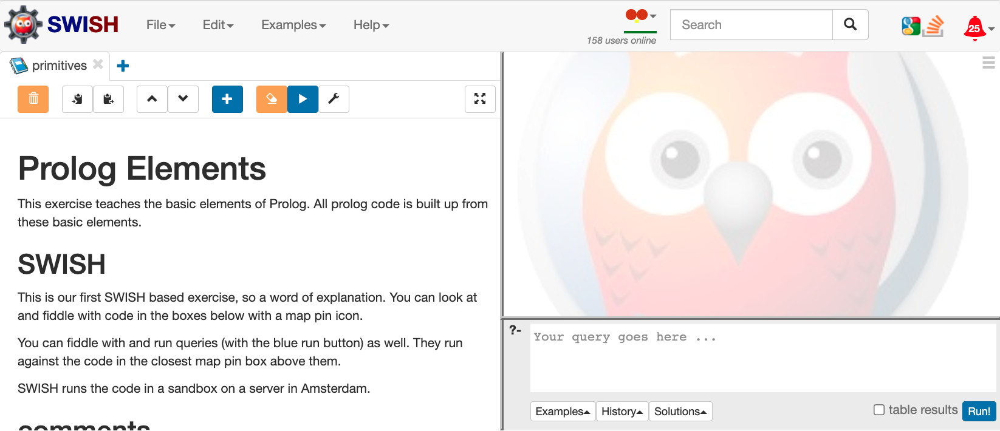

Lesson 4: Automation
Learning outcomes:
In this lesson we study two ways of automating logical reasoning:
- Prolog: a logic programming language, and
- Prover9: a theorem prover.
After completing this lesson you should be able to:
- use Prolog to represent simple situations involving propositions,
- explain the difference between the open world assumption and the closed world assumption
- make use of the way Prolog works with negation as failure in simple examples
- use Prover9 to input propositional logic statements and check whether a given goal can be proved from these.
Formative activities for Lesson 4
In this lesson you should make use of both Prover9 and of Prolog and run all of the examples presented in the lesson.
You should also explore what happens if you make small alterations to the examples given.
-
What happens
- if you add extra logical statements,
- or if you change the existing ones,
- or if you remove some of them?
- if you add extra logical statements,
-
Can you understand why the behaviour changes when you do these things?
-
If you come across things that don't seem to make sense this is valuable as you can then ask questions about this on the discussion board or by asking the module leader directly.
-
If there is something that does not behave as you would expect, then it is important to make an example that is as simple as possible before asking about it.
- Try to cut down examples as far as possible to still get something you don't understand while having as little as possible that is not essential.
You should also experiment with putting some of the examples from lessons 2 and 3 into Prover9 or Prolog, or both, and seeing if things behave as expected.
Prolog: getting started
Declarative not imperative
Prolog is a logic programming language. If you have not seen other declarative languages before, you may find Prolog surprising at first. If your experience is limited to imperative languages you will be familiar with writing statements which are commands, and fragments of code may look like this:
x := y + 2;
y := y + 1;
We understand such code as instructions to change the values stored in locations called x and y. However, in Prolog, code can look like this
todayIsTuesday.
tomorrowIsWednesday :- todayIsTuesday.
These can be read not as commands to do something, but as logical statements.
- The first
todayIsTuesday.is asserting a fact that the proposition today is Tuesday holds. - The second
tomorrowIsWednesday :- todayIsTuesday.is a clause asserting that if it is true that today is Tuesday, then it is true that tomorrow is Wednesday. In the clause the head is the part before the :- and the body is the part after the :- .
Note that every fact and every clause is terminated with a full stop. Forgetting this can lead to confusion at first. It is also essential that propositions always start with a lower case letter.
Interaction with Prolog
A simple way of using Prolog is to put the above code into a file, and then to interactively enter a Prolog query. A query is again a logical statement, and the Prolog interpreter will respond by telling you whether the query can be deduced from the assertions in the code or not. One view of Prolog code is that it provides a database of basic facts together with rules (written as clauses) that allow new facts to be deduced. An example of interacting with Prolog can look like this:
Welcome to SWI-Prolog (threaded, 64 bits, version 7.5.0)
SWI-Prolog comes with ABSOLUTELY NO WARRANTY. This is free software.?- consult('/Users/scsjgs/today.pl').
true.?- tomorrowIsWednesday.
true.
In the above example, the interactive prompt from the interpreter is
?- and the input typed by the user follows on the same line.
Prolog tries to appear as if everything is a logical statement, but
this is a bit misleading as the input consult('/Users/scsjgs/today.pl').
is more like an instruction to read in a database of facts and rules.
The response true. tells the user that the code has been successfully
read. The second input from the user is
tomorrowIsWednesday. which is the query asking whether this proposition can be deduced from the facts and rules.
SWI-Prolog
You can download the free SWI-prolog implementation from www.swi-prolog.org
SWISH Prolog
There is an alternative way of using SWI-prolog that runs online and requires no installation. At swish.swi-prolog.org you will see an interface like this:

Select for full text description of screenshot 1
A screenshot of the SWISH website as it appears when you first open it up. At the top of the page is a toolbar with drop down menus for file, edit, examples and help. To the toolbar’s right is an icon indicating the number of users online and a search box. Further to the right are icon login links for Google, Stack Overflow and an online hangout. Below this the screen is split into two, with clickable elements and instructions on the left-hand side and a box to input and run queries on the right. The query box is overlooked by the SWISH avatar, a cartoon owl.
To get started with the simple example you can just follow these instructions and ignore the details you can see where it says 'Prolog Elements'.
The first thing is to click on the + sign at the top of the left hand pane in the interface and below the bar that runs across the whole interface. You should see this:
Select for full text description of screenshot 2
A screenshot of the SWISH website after having clicked the plus button on the left-hand side under the menu toolbar to open a new tab. This tab gives you options to create a program or notebook. Clicking program will take you to a new window to the bottom right of the screen where you can enter code.
Click on Program (on the upper left where it says 'Create a Program … ') and ignore everything else. You will get a window to the bottom right of the screen, into which you can paste the two lines of prolog code we had earlier:
todayIsTuesday.
tomorrowIsWednesday :- todayIsTuesday.
In addition, you may find it helpful to select the Edit menu and make sure that Semantic highlighting is not ticked. If it is ticked you will find that the code looks as if there are errors in it with some words in red, but this is not useful to start with.
Select for full text description of screenshot 3
A screenshot of the SWISH website with the edit menu open. The edit menu features check boxes to turn a number of options on and off. The purpose of this screenshot is to ensure that you have semantic highlighting turned off.
Having entered the code, you can then:
- enter the query in the lower of the two right hand panes,
- click on 'Run!' in the bottom right corner, and
- see the response in the upper pane on the right.
Select for full text description of screenshot 4
A screenshot of the SWISH website which shows the response in the program window on the upper left-hand side after you have run a query in the box on the lower right-hand side.
You can then explore some of the other features that swish allows, but you will not need all of these for the module.
The idea of goals in Prolog
In our very simple example, tomorrowIsWednesday. is a goal that the prolog interpreter attempts to justify as true given the facts and rules it has. You can imagine it does this as follows, searching through the database of facts and clauses to find a reason why the goal statement must hold.
- tomorrowIsWednesday is found as the head of a clause in the database.
-
The body of the clause: todayIsTuesday now becomes a new goal because the clause can be read as:
- the goal tomorrowIsWednesday can be achieved if the (sub)goal todayIsTuesday can be achieved.
-
The goal todayIsTuesday is achieved (can be satisfied) because this is stated as fact in the database.
Notice that this is a very procedural way of thinking about the Prolog code. Writing effective Prolog code involves both thinking about logic as instructions and as declarative statements.
Beyond the simple Prolog example
The above example only illustrates an extremely simple example of Prolog. The language itself includes far more, such as the ability to:
- use variables,
- manipulate complex data structures involving lists,
- use sophisticated pattern-matching in writing rules,
- write code that alters the database of facts and rules, and
- control the way the interpreter searches through the available facts and clauses.
This last aspect, altering the way goals are attempted to be satisfied, shows that Prolog programs can end up being a long way from purely logical statements. In order to make effective use of Prolog, you will need to learn something of the way the logic is processed.
Prover9: getting started
Prover9 is a theorem prover which works for first order logic, including propositional logic. Alongside Prover9 you can use Mace4 to search for finite models of first order theories.
There are two ways to get access to Prover9. You can install it on your own computer, or you can use it via a virtual machine provided for you for this module.
Installing Prover9 yourself
You can download the software from the Prover9 site. There are two ways to interact with Prover9 and Mace4. The command line version should be possible to install on most Linux or MacOS computers. There is also a version with a graphical interface that may not work depending on your operating system. Installing it yourself may not be easy and the module does not assume you have been able to do this.
Using Prover9 via virtual machine
You will need to be familiar with basic linux commands such as
ls, cd, pwd, mkdir, mv, cp, rm, more, man and so on.
First, follow these step-by-step instructions for accessing a virtual machine (VM).
Log in to the virtual machine as per these instructions, then create an input file. An input file for Prover9 looks like this:
formulas(assumptions). % you can add comments like this
- awake -> asleep.
awake.
end_of_list.
formulas(goals).
- asleep.
end_of_list.
Logically this input consists of these two assumptions:
\(\neg \mathit{awake} \to \mathit{asleep}\),
\(\mathit{awake}\).
and this goal which the aim is to prove from the given assumptions:
\(\neg \mathit{asleep}\).
Running Prover9 on the command line will look like
prover9 < input_file > output_file
where input_file and output_file are the names of files for the input and output.
In this example the output is not very interesting as the goal cannot be proved. We get this:
scsjgs@vm-ocom5201m:~$ prover9 < sleepexample > sleepout
SEARCH FAILED
------ process 25020 exit (sos_empty) ------
Working with Prover9
We will use Prover9 substantially in some units of this module, and it will be used in part of the assessment. The method of proof that Prover9 uses is called resolution and the details of this will be studied as part of the module itself. This is also the reasoning mechanism used by Prolog.
Do This
To make sure you understand the basic operation of Prover9, repeat the above example, but changing the input assumptions to
\(\mathit{awake} \to \neg \mathit{asleep}\),
\(\mathit{awake}\).
Check that the goal
\(\neg \mathit{asleep}\)
can now be proved.
Did the elephant sit on the fence?
here is a bigger example
scsjgs@vm-ocom5201m:~$ more p9prop1
formulas(assumptions).
ElephantOnFence -> BrokenFence.
ElephantScared -> (ElephantOnFence | ElephantOnCar).
(MouseInGarden & SunnyDay) -> ElephantScared.
SunnyDay -> - ElephantOnCar.
CatInHouse -> (MouseInGarden & BirdsInGarden).
CatInHouse & SunnyDay.
end_of_list.
formulas (goals).
BrokenFence.
end_of_list.
scsjgs@vm-ocom5201m:~$ prover9 < p9prop1 > out1
-------- Proof 1 --------
THEOREM PROVED
------ process 20565 exit (max_proofs) ------
If you look at the output file you will see a great deal of detail about the processing but including the proof:
1 ElephantOnFence -> BrokenFence # label(non_clause). [assumption].
2 ElephantScared -> ElephantOnFence | ElephantOnCar # label(non_clause). [assumption].
3 MouseInGarden & SunnyDay -> ElephantScared # label(non_clause). [assumption].
4 SunnyDay -> -ElephantOnCar # label(non_clause). [assumption].
5 CatInHouse -> MouseInGarden & BirdsInGarden # label(non_clause). [assumption].
6 CatInHouse & SunnyDay # label(non_clause). [assumption].
7 BrokenFence # label(non_clause) # label(goal). [goal].
8 -ElephantOnFence | BrokenFence. [clausify(1)].
9 -ElephantScared | ElephantOnFence | ElephantOnCar. [clausify(2)].
10 -MouseInGarden | -SunnyDay | ElephantScared. [clausify(3)].
11 -SunnyDay | -ElephantOnCar. [clausify(4)].
12 -CatInHouse | MouseInGarden. [clausify(5)].
14 CatInHouse. [clausify(6)].
15 SunnyDay. [clausify(6)].
16 -BrokenFence. [deny(7)].
18 MouseInGarden. [back_unit_del(12),unit_del(a,14)].
19 -ElephantOnCar. [back_unit_del(11),unit_del(a,15)].
20 ElephantScared. [back_unit_del(10),unit_del(a,18),unit_del(b,15)].
21 -ElephantOnFence. [back_unit_del(8),unit_del(b,16)].
22 $F. [back_unit_del(9),unit_del(a,20),unit_del(b,21),unit_del(c,19)].
Automating the extended example
We now see how the example of reasoning from Lesson 3 about whether there is a power cut or the light bulb in the lamp is dead can be handled both in Prover9 and in Prolog. We will see Prover9 first as Prolog involves an additional topic: negation as failure.
Prover9
We can input the scenario and goal thus:
formulas(assumptions).
harryAlone & - harrySwitchedOff -> switchOn.
tv -> powerOK.
- lampLit & switchOn & powerOK -> bulbDead.
tv.
- harrySwitchedOff.
harryAlone.
- lampLit.
end_of_list.
formulas(goals).
bulbDead.
end_of_list.
The output (which you are not expected to understand at this point) is:
1 harryAlone & -harrySwitchedOff -> switchOn # label(non_clause). [assumption].
2 tv -> powerOK # label(non_clause). [assumption].
3 -lampLit & switchOn & powerOK -> bulbDead # label(non_clause). [assumption].
4 bulbDead # label(non_clause) # label(goal). [goal].
5 -harryAlone | harrySwitchedOff | switchOn. [clausify(1)].
6 -tv | powerOK. [clausify(2)].
7 lampLit | -switchOn | -powerOK | bulbDead. [clausify(3)].
8 tv. [assumption].
9 -harrySwitchedOff. [assumption].
10 harryAlone. [assumption].
11 -lampLit. [assumption].
12 -bulbDead. [deny(4)].
13 powerOK. [back_unit_del(6),unit_del(a,8)].
14 switchOn. [back_unit_del(5),unit_del(a,10),unit_del(b,9)].
15 $F. [back_unit_del(7),unit_del(a,11),unit_del(b,14),unit_del(c,13),unit_del(d,12)].
The basic operation of resolution can be seen in the passage from the assumptions
tv -> powerOK.
tv.
to the fact that powerOK holds.
We can see the mechanism as follows:
2 tv -> powerOK # label(non_clause). [assumption].
6 -tv | powerOK. [clausify(2)].
8 tv. [assumption].
13 powerOK. [back_unit_del(6),unit_del(a,8)].
What is happening here is this:
- (step 2) the implication \(\mathit{tv} \to \mathit{powerOK}\) is assumed to hold
- (step 6) the implication is logically equivalent to \(\neg \mathit{tv} \vee \mathit{powerOK}\)
- (step 8) we have the assumption \(\mathit{tv}\)
- (step 13) the only way the two statements in steps 6 and 8 can be true together is for \(\mathit{powerOK}\) to be true.
Prolog version
We can use prolog
switchOn :- harryAlone, not(harrySwitchedOff).
powerOK :- tv.
bulbDead :- not(lampLit), switchOn, powerOK.
tv.
harrySwitchedOff :- fail.
harryAlone.
lampLit :- fail.
the interaction is:
?- consult('bulb.pl').
true.
?- bulbDead.
true.
The encoding of the problem in prolog looks strange. Why has it got fail twice in the input? Prolog treats logical negation in a different way to Prover9 and the approach is called negation as failure. We will come back to the power cut example once we have looked at a very simple example to explain about negation as failure.
Negation in Prolog
A simple comparison between Prover9 and Prolog
In Prolog, enter the following in the program area of Swish
:- discontiguous(tuesday/0).
monday.
Here monday is a proposition or a fact. The other part :- discontiguous(tuesday/0). has no logical function. It is there so that Prolog won't complain about never having heard of tuesday. Now, try the goal
not(tuesday).
Notice what response you get.
Now contrast this with Prover9 by using this input file:
clear(auto_denials).
formulas(assumptions).
monday.
end_of_list.
formulas (goals).
-tuesday.
end_of_list.
You should run Prover9 with this example and see whether the goal is proved from the assumptions. The line clear(auto_denials). does not affect the logic, but generally helps avoid some opaque behaviour from Prover9.
Note that this is giving essentially the same task as we just tried in Prolog:
-
we state that the proposition monday holds. We can think of this as meaning today is monday if we want to.
-
we then ask whether the negation of the proposition tuesday holds.
You should find that Prover9 and Prolog disagree with each other about this example. The reason is that they understand not to mean quite different things.
-
In Prolog it is not tuesday because it is impossible to prove that it is tuesday.
-
In Prover9 it is not the case that it is not tuesday, because there is no way to prove that it is not tuesday from the given assumptions.
The way Prolog treats not is called negation as failure, because if it fails to prove something then it takes the negation of that something to be true. The way Prover9 treats not is the conventional mathematical way for classical logic.
Expressing not in Prolog.
To return to the powercut example, if we need to assert that some proposition is not true we can say that any attempt to satisfy the proposition as a goal must fail:
lampLit :- fail.
An alternative way for a goal to fail is simply not to assert it at all. This is what happened in the small example we just saw. Explicit failure has the same effect and would make for more readable code in most cases.
Prolog is taking an approach to negation that goes with the closed world assumption that things are false unless we know explicitly they are true. This is familiar in databases. For example, if an organisation wants to know if they have an employee called "Lyra Silvertongue" they might search in a database of all their employees and see if that name is there. If the name is not there they conclude that they have no such employee, despite it not being asserted directly that this person is not an employee. It is called the closed world assumption because it is assumed that the list of employees is complete and there cannot be any that are not recorded in the database.
In Prolog, if we want to make a goal including some subgoals which must fail we express it like this
switchOn :- harryAlone, not(harrySwitchedOff).
Note that
- in the body of a clause we can use the special Prolog word not, but
- to assert a fact of the form '\(x\) is not true' we can say x :- fail..